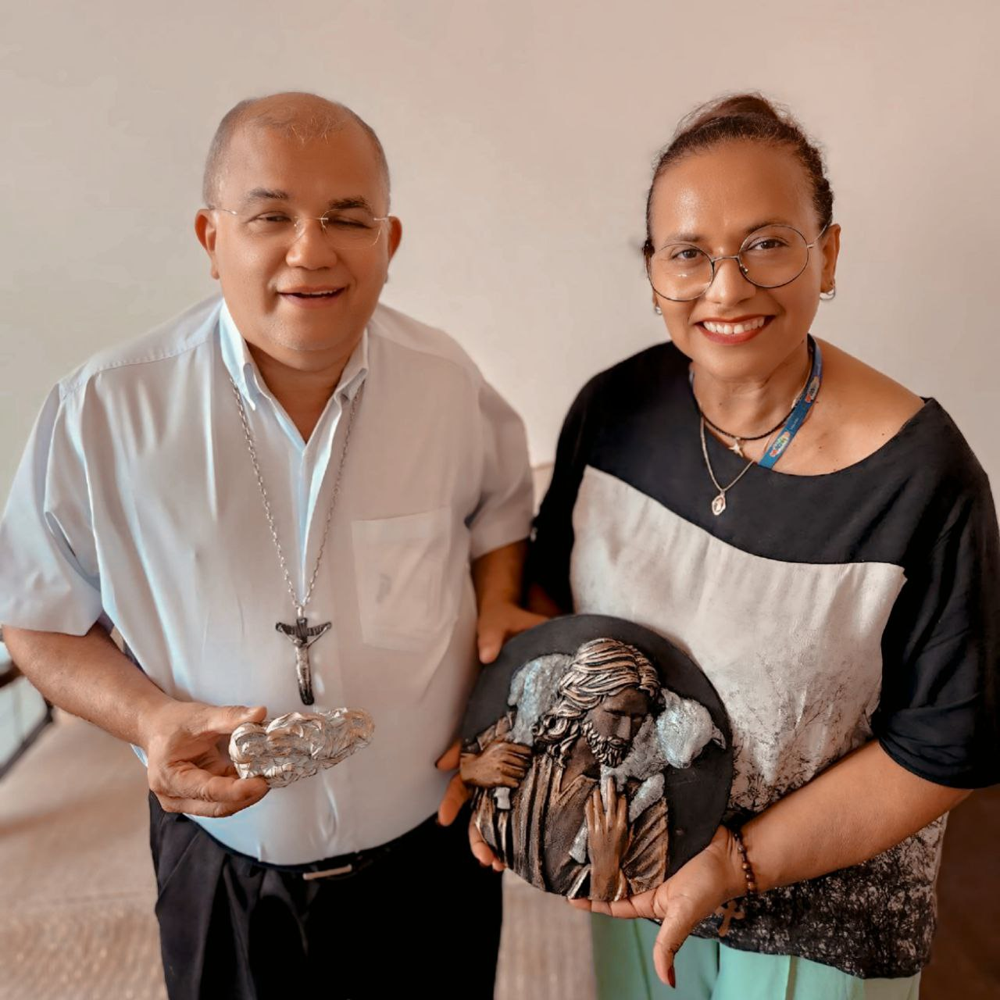

Por onde já andamos
Conheça os eventos, feiras e projetos dos quais a MARDEARTES participou.

Feira de Artesanato Regional
Participação na feira de artesanato com nosso mural de flores.

Decoração de Casamento
Criação de um painel "instagramável" para recepção.

Entrega de peça do Bom Pastor ao bispo de São Luís
Na imagem, vemos nossa Fundadora e talentosa artesã, Marlene Sá, ladeada por S. Exa. Revma. Dom Gilberto Pastana, Bispo de São Luís. O Bispo gentilmente segura duas peças da nossa artesã: a bela medalha do Bom Pastor e a tocante pequena escultura de São José dormindo. Este encontro não apenas reconhece o valor do trabalho artesanal e da dedicação à arte sacra, mas também fortalece o nosso compromisso com a espiritualidade e a missão de levar a beleza da fé através de peças únicas e significativas.